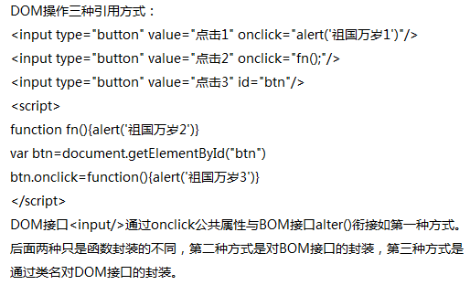
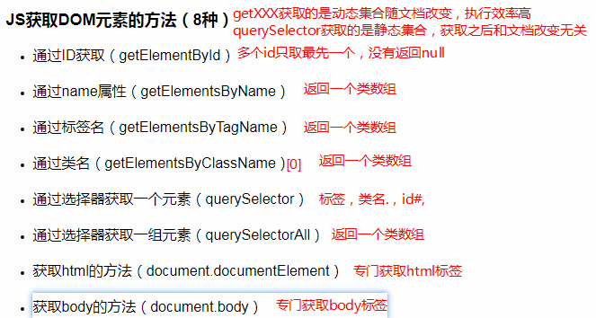

软件系统不同组成部分衔接的约定，是一些预先定义的函数，任何能从自身环境中分离出来的软件或代码块都可以成为API。
面向对象编程中，代码被编成对象，每一个对象都有一个API(一组公共方法和属性)，可以用他与其他对象进行交互。对象可以拥有私有内部逻辑，躲避外部环境影响（这就不是API）
浏览器提供的一套操作浏览器功能和页面元素的API(BOM和DOM)
一套操作浏览器功能的API，通过BOM可以操作浏览器窗口，比如：弹出框、控制浏览器跳转、获取分辨率等
对话框：alert(),prompt(),confirm()
页面加载事件：window.onload = function(){//当页面加载(包括图片,js,css,等)完成执行}
window.onunload = function(){//当用户推出页面时执行}
定时器：setTimeout(fn(){},1000)和clearTimeout（）//1000毫秒后调用函数
setInterval(fn(){},1000)和clearInterval()//每隔1000毫秒调用一次函数
loacation对象：获取或设置浏览器地址栏的URL:scheme://host:port/path?query#fragment
一套操作页面元素的API，DOM可以把HTML看做是文档树，通过DOM提供的API可以对树上的节点进行操作。
我们想要操作页面上的某部分就需要先获取到该部分对应的元素，才进行后续操作
